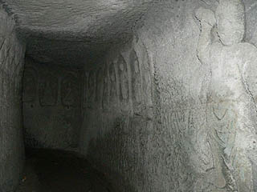
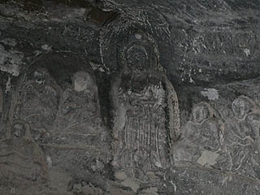

2005.2.
富津市に洞窟寺院があると聞いて行ってみた。
富津付近は砂岩系の軟らかい地質ゆえあちこちに手堀りの洞窟や切り通しがあり、仏教系の洞窟としては以前お伝えした日本寺や切り通しがある灯籠坂大師などがある。また、民家の裏山の崖をくり抜き物置や駐車場に使用するという豪快なお土地柄でもある。
そんな富津の一画に観音堂がある。場所は民家の裏手にあり分かりにくい。観音堂に登る階段が唯一の目印だ。
階段を登っていくとコンクリートで鋪装された道はすぐに途切れ、落葉が堆積しており、さらに頭上の木から落ちた鳥の糞でその落葉が真っ白になっていた。近在の人もあまり来るトコロではないのだろう。
しばらく歩くと観音堂が見えてきた。
この観音堂は小さな山（といっても精々標高数十メートル程度のものだが）の中腹にあり、後ろは崖、前も斜面というかなり際どい場所に建っている。お堂の前はすぐ斜面になっているので数メートル程のスペースしかない。そして観音堂自体は非常に小さく、まあ、言ってしまえば実に簡素な造りで、中を覗いてみてもガラ〜ンとしている。寂しさ満点のお堂である。
見れば背後の崖にくっ付いている様子なので岩壁に彫られた磨崖仏の覆屋になっていると考えられる。
残念ながら観音堂の一番奥の岩壁に接している部分には厨子が閉まっていて何が彫られていたのかは確認出来なかったがお堂の前に「行基菩薩一夜之作 岩谷観世音菩薩」という石碑が建っていた。
しかし何よりも注目なのは観音堂の右脇にある岩屋だ。
観音堂右手に岩屋は3つあり、その中でも観音堂のすぐ脇にある洞窟は奥まで続いていそうな雰囲気である。
早速、中に入ってみましょう。

中に入ると、驚いた事に壁面にズラズラズラ〜っと磨崖仏が彫られている。
入ってすぐの大きな磨崖仏は仁王像なのだろうか、細部はほとんど摩滅しておりシルエットしか残っていない。
ちなみにどれくらい軟らかいというと岩肌に肩が少し触れた程度でボロボロっと崩れる位軟らかい。下手に触ると岩肌が崩れるので充分注意して進む。
仁王像らしき磨崖仏の奥には5〜60センチ程度のこれまた恐らく観音像と思われる磨崖仏が彫られていた。
岩屋はトンネル状になっており10メートル程行くと通路は左に折れている。意外と本格的な洞窟である。
その先は外光も届かず真っ暗な闇だが、ライトを点灯して見るとやはり右側の壁に磨崖仏が刻まれている。
そしてさらに数メートル進むと通路はまた左に折れる。つまりコの字型のトンネルだった訳だ。
トンネル出口付近。手前は如意輪観音なのだろう。
トンネルを出て振り返るとあらビックリ。
出口は観音堂の左手、ちょうど反対側だった。しかも逆サイドにも岩屋がポコポコ開いているではないか！
上への岩屋は外を伝っていくのではなく、洞窟を出たすぐ横の崖の内側に階段がくり抜いてある。何だか楽しそうだぞ。
一応登る前に位置関係を説明させていただく。上左写真の一番右下にあるのが今出てきた洞窟の出口。そのすぐ横に階段がある。
階段は左中程にある丸い穴の部分（仮に岩屋1と呼ばせていただく）を経由し階段の途中に中央上の岩屋（岩屋2）を通り、左上の四角い穴の開いている岩屋（岩屋３）へと続く。
中々立体的な岩屋なのである。
砂岩系の崩れやすい階段なので壊さないように慎重に登る。
最初の階段を登り切ると岩屋1の部分に到達する。
上写真の左手が岩屋1で、数段狭い階段を登ると岩屋2がある（上写真右手）。その先にはさらに階段があり上写真中央奥に見える岩屋3へと続いている。
下左写真は岩屋2から下を見下ろしたところ。
この狭い階段が曲者で最後の段と岩屋2のレベル差が結構あり、腹這いであがらないと登れない。チョークで出来たような脆い石なのでお腹が崩れた石の粉で真っ白になってしまった。
岩屋1と岩屋2の穴の間はわずか数10センチ。行く事自体は不可能ではないが、ポキッと折れそうなので恐ろしくて行けませんでした。
階段といってもほとんど踏面が摩滅しておりしかも蹴上が高いので登りにくい事この上ない。
狭い階段を何とか登ってくる我が愚息。もう、服が真っ白になってお洗濯大変〜とか言っているレベルではない。岩屋でもちょっと見ていこうか、のつもりだったのが、段々とんでもないハードな事になってきた。頑張って登ってきている愚息よ、登ったはいいが下りられるのか？
岩屋3は少し奥行きのある岩屋で円形状の部屋には磨崖仏が彫られていた。
これまた何が彫られているのか全く分からないが三十三観音だった、ような気がする。
何とか真っ白になりながらも階段を降りて外に出る。一番上から飛び下りてしまいたくなるようなキツイ（面白い）立体岩屋であった。
岩屋を出ると、さらに奥のほうにも浅い岩屋が2つあった。手前の方の四角い岩屋には何でしょうコレ。閻魔様みたいな磨崖仏が彫られてました。奥の丸い岩屋には何もなかったみたいです。
ほうほうの呈で岩屋を降り、また先程の観音堂の右手に戻る。
・・・あと２つ残ってるじゃないですか。
下の岩屋は簡単に行けるのだが上の岩屋は今度は外側にある階段を登っていかなければならない。
ここも急で崩れかかった階段なので慎重に登っていく。しかも苔が付いていて滑りやすい。
階段を登り、岩屋内部にはいるとそこは広々とした空間で、またしても三十三観音像らしき磨崖仏が刻まれていた。
ここも摩滅が激しく原型がほとんど判別出来ないのだが、入口と採光用の穴の間に柱状に残っている岩の内側に彫られた2体の観音像は比較的良好な状態であった。観音像の下に書かれていた奉納者の住所と名まで判別出来る。
また、奥に並んでいる観音像の一部に彫刻する際の下書き用の線なのか彩色されたものなのかは良く分からなかったが赤いベンガラが塗られているのが確認出来た。もしかしたらココの観音像はかつて色まで塗られていたのだろうか。このモノトーンの空間がかつては色とりどりの世界だったのかもしれない。だとしたら凄いっすね。
というわけで激しい岩屋めぐりも終わり引き返そうとすると・・・
もう一個ありました！しかも今度の岩屋は階段がほぼ崩れていてしかも草木で覆われている。うむ〜どうしようかなあ〜と思っていると、愚息がひょいひょいっと地表に露出していた木の根を掴みながら登ってしまった。うっ！父親の沽券にかけてもここは登らない訳には参るまい。意を決してどろどろになりながらも登ってみました。
階段はほとんどアテにならないので細い木の根を頼りに鎖場を登るように何とか登ってみる。
するとそこにはズラ〜っと五輪塔が刻まれた空間が現れた。
五輪塔がある岩屋といえば鎌倉のいわやを思い出す。ここ富津は鎌倉から東京湾を挟んでわずか20数キロ程、何らかの影響があったのかも知れない。
しかしここのは本物の五輪塔ではなく岩壁に刻まれた五輪塔のレリーフであり、しかも玉の部分に穴が開いているのを見るともしかしたら灯籠をかたどっているのかも知れない。ナゾだ。
苦労をして登って来た甲斐があった。うむ。ここの岩屋を全制覇できて満足満足。想像だにしない体育会系洞窟寺院だった。
ふと、下を見ると愚息が転がっている。降りる時に木の根が切れたようだ。
唯一の命綱が切れてしまって、俺、どうやって降りたらいいんだろう・・・
場所は変わって同じ富津市内の薬王寺。ここにも磨崖仏があるという事で寄ってみた。
えっ、先程の木の根が切れた岩屋からどうやって降りたかって？
・・・それは私の沽券に関わる事なのでココでは言えませぬ・・・
薬王寺の本堂の右手に朱塗りの薬師堂がある。そのお堂は背後の岩壁を覆うようにして建っているのだ。
薬師堂の右側に小さな戸があったので中を覗いてみると・・・
ああ、これですね。いらっしゃいました。

中央は多分薬師如来。で、その両脇に12体の磨崖仏が彫られていた。
先程の岩屋観音に比べて覆堂があるせいか、保存状態が大変よろしい。
薬師如来の周りにいる12体といえば十二神将といいたいところだが12体の磨崖仏はいずれも僧形のようである。
十二神将のかわりにお坊さんを配したのだろうか。伐折羅とか宮毘羅といった強面系のガードマンに比べるとえらいソフト路線のガードである。
ま、覆屋があるから大丈夫って事で。
この薬王寺は海岸沿いにあり、境内のすぐ隣は海である。
その海の向こうには富津名物のあの人がそびえ立っていました・・・
あ〜風呂入りて〜（全身ドロドロ）
2005.2.
珍寺大道場 HOME